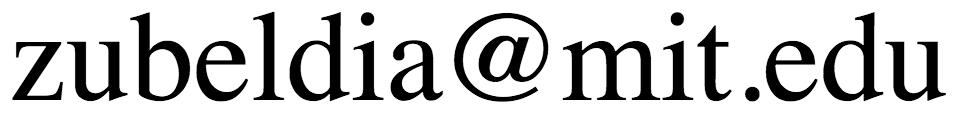

6.436J/15.085J Fundamentals of Probability
Fall 2017
Lectures Monday, Wednesday 2:30–4:00 PM in Room E51-345
Recitations (1) Friday 11:00 AM–12:00 noon in Room 4-145, (2) 2:00 PM–3:00 PM in Room 26-168
First lecture: Wednesday, September 6
First recitation: Friday, September 8
Instructor:
Professor Tamara Broderick
Office Hours: Monday, 4–5 PM, 32-G498
Email: 
TAs:
Martín Zubeldía
Email: 
Tianheng Wang
Email: 
TA Office Hours (starting Tues 9/12): Tuesday, 4–5 PM, 56-154
Description
This is a course on the fundamentals of probability geared towards first or second-year graduate students who are interested in a rigorous development of the subject. The course covers most of the topics in 6.041/6.431 (sample space, random variables, expectations, transforms, Bernoulli and Poisson processes, finite Markov chains, limit theorems) but at a faster pace and in a lot more depth. There are also many additional topics such as: language, terminology, and key results from measure theory; interchange of limits and expectations; multivariate Gaussian distributions; deeper understanding of conditional distributions and expectations.
Piazza Site
Our course Piazza page is here: https://piazza.com/mit/fall2017/6436